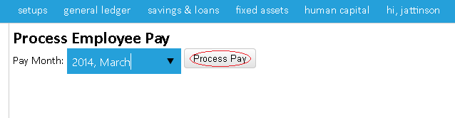
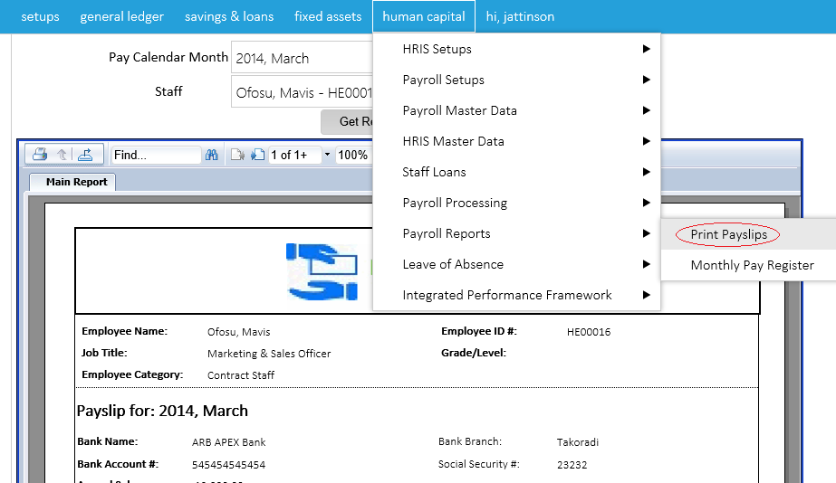
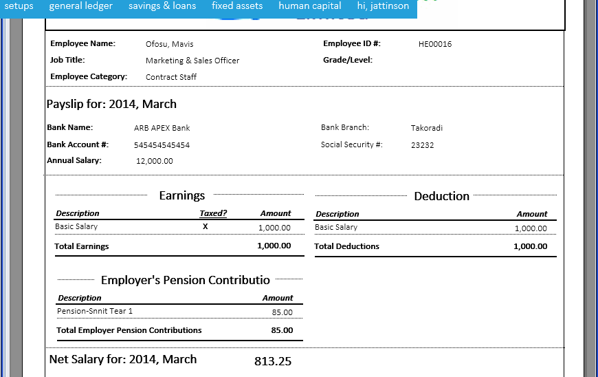

To process the payroll, you must first select Pay Calender to choose the month in which it is being processed for as shown in the images below

After clicking on the pay calender month, right click on the year and click on create calender month to add a month as shown in the image below


After clicking on the process payslip go back to select print payroll then choose the pay month and staff name then click on get report to get payslip as shown in the images below,


Created with the Personal Edition of HelpNDoc: Easy CHM and documentation editor